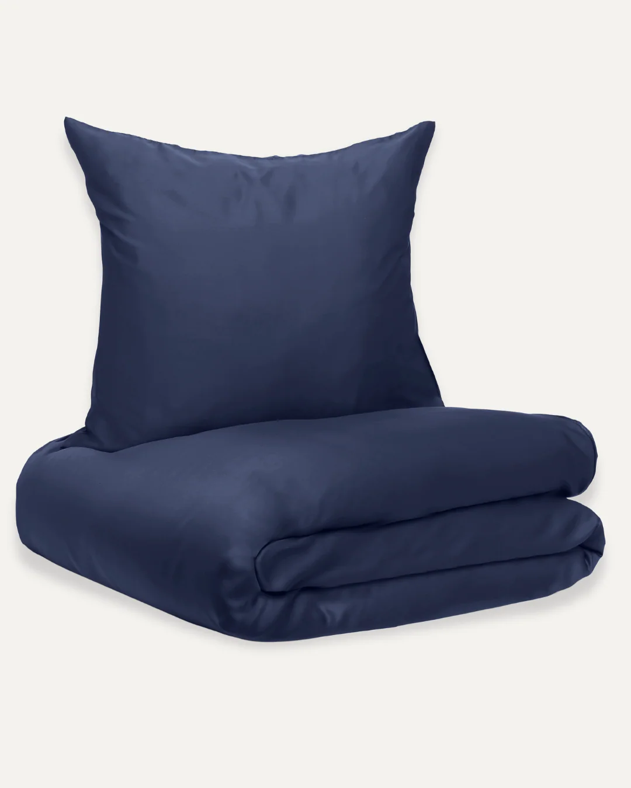
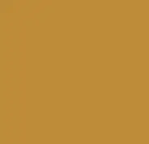
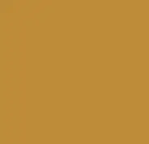
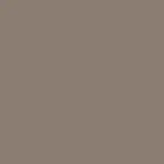
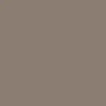

Køb 2 sæt og få 20% rabat
100%bambusviskose (lyocell) fra økologisk bambus
Bambussengetøj / Navy blue
599,00kr - 1.099,00kr
Farve


 


 

Mønstre

Størrelse
Størrelsesguide
140*200
140*220
200*200
200*220
240*220
100% Bambus

Matchende bambusdyne?
Tilføj den og nyd luksuskomfort året rundt.
1.299,00 kr - 2.199,00 kr
0
>
Kurv
Shop videre
Kurven er tom
De varer, som du tilføjer, bliver vist her
Tilkøb af gaveindpakning
Tilkøb af brodering